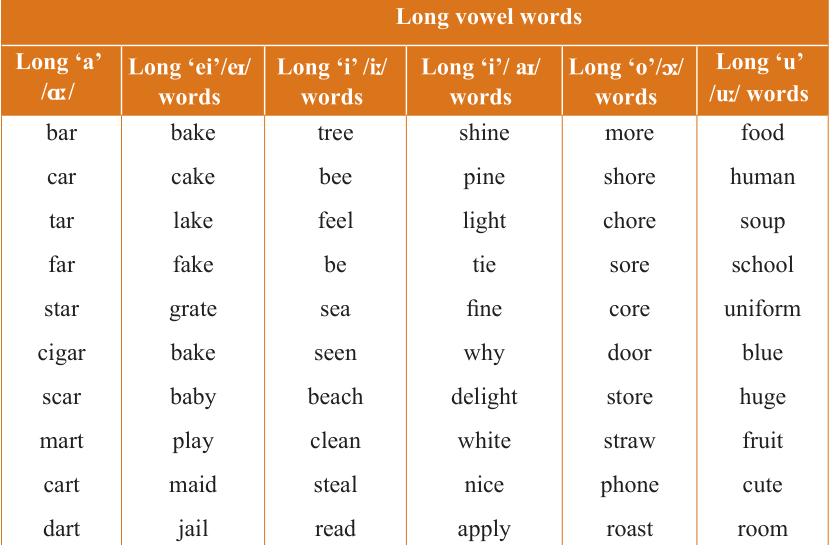

English for Secondary Schools Student’s Book Form One, printed page 33
I’m stuck in a train taking me home
Nothing to do but my thoughts can roam
Journey’s so long, the train is so slow
But I’ll reach my dream, that much I know.
(b) Copy all the words in boldface from the poem. Then, pronounce the words and construct a sentence for each.
 “Do you know?” section banner
“Do you know?” section bannerDO YOU KNOW?
All the words in boldface in the poem above have long vowels. Study the following table containing a list of words with long vowels. Then, pronounce the words.
Long vowel words

Long vowel words table. Long ‘a’, /ɑː/: bar, car, tar, far, star, cigar, scar, mart, cart, dart. Long ‘a’, /eɪ/: bake, cake, lake, fake, grate, bake, baby, play, maid, jail. Long ‘e’, /iː/: tree, bee, feel, be, sea, seen, beach, clean, steal, read. Long ‘i’, /aɪ/: shine, pine, light, tie, fine, why, delight, white, nice, apply. Long ‘o’, /ɔː/: more, shore, chore, sore, core, door, store, straw, phone, roast. Long ‘u’, /uː/: food, human, soup, school, uniform, blue, huge, fruit, cute, room.